动力力学模拟流程：土坝地基
注意
要在 FLAC3D 中查看此项目，请使用菜单命令 。选择“Dynamic/DamFoundation”并选择“DamFoundation.f3prj”以加载。 所用主数据文件见本示例末尾（main data files）。其余数据文件可在项目中找到。
采用陡峭河谷中土坝的简单模型来说明动力力学分析中 使用的大多数功能。该坝高 30 m、宽 60 m，坝顶水平段宽 20 m； 上、下游边坡坡度为 2:1。假定坝体材料可以破坏， 而河床地基材料不会因施加的地震荷载而破坏。为便于快速执行， 该模型作了大幅简化，但很容易扩展用于表示真实土坝（例如具有更 复杂的内部结构）。
首先描述达到初始平衡状态的各个阶段，然后描述动力分析中的 四个组成部分，这些内容在动力力学模拟流程（Procedure for Dynamic Mechanical Simulations）中有所提及。
网格生成
用于建立网格的数据文件为“GenGrid.dat 数据文件（GenGrid.dat）”。 该文件进而调用“Geometry.dat”，后者是使用 块体构建 窗格交互生成 并从 状态记录 窗格导出的。生成的网格图 示于 图 1（Figure 1）。以绿色显示的土坝坐落在以蓝色阴影显示的 河床地基材料上。两者均处于表示 45° 边坡对称河谷的边界平面之内。 就本示例而言，假定河谷材料比坝体和地基材料刚硬得多，因此将其视为 刚性边界。它由固定边界表示，而不是单独的网格。
地基材料在两端（两个 \(x\) 方向的边界）被简单截断；
在更真实的模型中，这些边界应设置得更远。
请注意，该网格在文件开头即配置为动力模拟
（模型配置动力分析命令（model configure dynamic）），但在初始静力阶段动力运行模式处于“关闭”状态
（模型动力活动命令（model dynamic active） 关闭（off））。
该网格中最大网格单元尺寸约为 12 m。如动力
条件与模拟（Dynamic
Conditions and Simulation）中所述，该尺寸足以
准确模拟模型中的波传播。坝体网格划分得比
河床地基更细，以便合理表示坝内可能形成的破坏区。
细网格坝体通过 单元附着按面（zone attach by-face） 命令与较粗网格
地基连接。

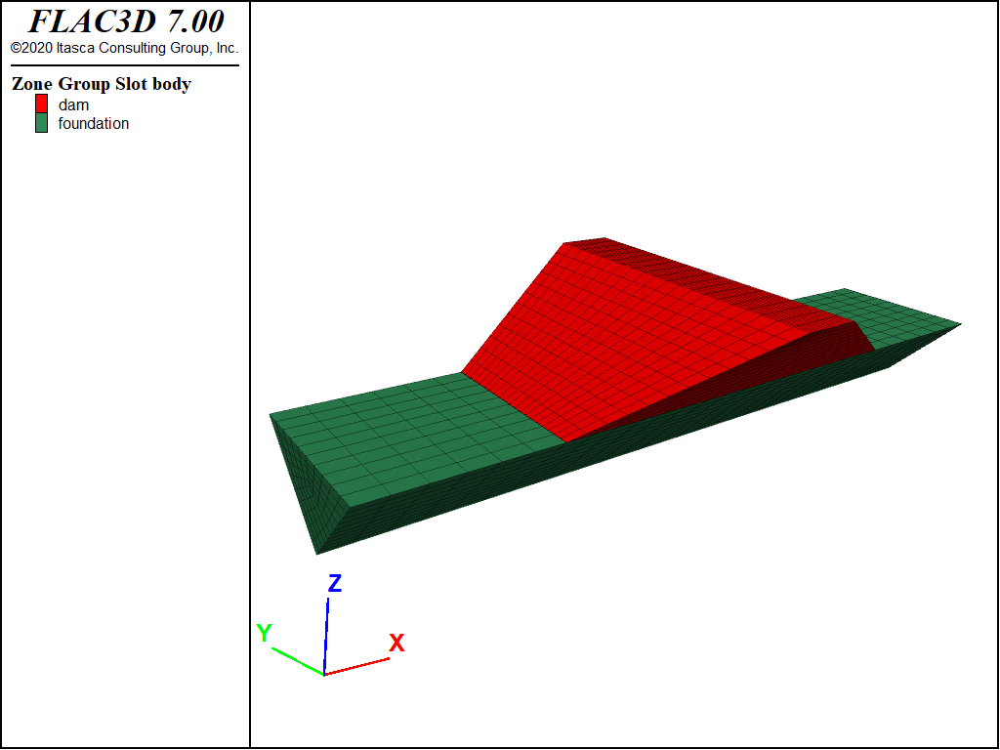
图 1：土坝及地基的网格。
初始静力条件
为两岸坝肩和地基两端设置边界条件，使施加重力时 垂直于相应平面的运动被约束。这样，模型在边界平面上剪应力为零的条件下达到平衡。 达到初始平衡状态的数据文件为“GravLoad.dat 数据文件（GravLoad.dat）”， 竖向应力的云图示于 图 2（Figure 2）。 请注意，坝体采用 Mohr-Coulomb 材料，但 其强度被设为在初始压密阶段不发生屈服。黏聚力和 抗拉强度设为很大的值。这种施加初始 应力的方法只是众多可行方案之一； 关于初始条件的完整讨论参见初始条件（Initial Conditions）。

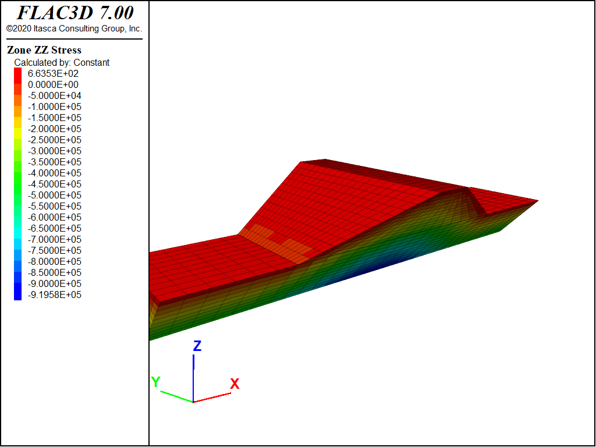
图 2：重力加载后竖向应力的云图。
生成初始静力条件的最后阶段是在坝体设置符合实际的 强度特性，并在坝体上游面施加压力边界条件以模拟蓄水。就本说明性示例而言， 假定土坝是干燥的（即流体仅起力学边界条件作用，不渗入坝体）。在更真实的分析中，可以在坝内设置 地下水位，从而改变坝内的有效应力。（这在下一节中有演示——见 土坝地基（有水）（Dam Foundation Wet）。）假定坝体材料 黏聚力为 40 kPa、摩擦角为 40°、抗拉强度限值为 4 kPa。
“PropPlusWaterLoad.dat 数据文件（PropPlusWaterLoad.dat）”在 \(x\)、\(y\) 和 \(z\) 方向固定所有边界（这意味着地基材料与刚性河谷壁之间为粗糙接触面）， 设置坝体材料的实际强度特性，并在坝体上游面施加静水压力以表示水库荷载。地基材料保持弹性。 执行“PropPlusWaterLoad.dat 数据文件（PropPlusWaterLoad.dat）”的结果是坝内发生部分屈服， 系统在上游坡面最大位移约 1 cm 后趋于稳定。
动力条件与模拟
在执行动力分析之前，先考虑前面确定的四个组成部分。
检查波传播：该问题的动力荷载是一种简化运动：在模型底部沿水平方向施加正弦加速度波。该波频率为 2 Hz，分两个分量施加：一个分量沿 \(x\) 方向（沿河谷），幅值为 2 m/sec2（0.2 g）；另一个沿 \(y\) 方向（沿坝轴线），幅值为 1 m/sec2（0.1 g）。持续 6 秒的包络函数（\(\{1-\cos\omega t\}/2\)）与 2 Hz 输入波相乘，使波逐渐增强和衰减。该波的加速度方程示于 图 3（Figure 3），因此为
(1)\[ \ddot u(t) = {1 \over 2} \ (1 - \cos({{\pi \over 3} t})) \ A \ \sin (2 \pi f t)\]其中 \(A\) 为幅值，\(f\) 为频率。
地震分析的加速度记录通常读入“动力输入”向导，并在导入 FLAC3D 之前进行调整。本示例中，记录使用 FISH 函数 波（wave） 创建，并以 0.002 秒的采样间隔存入表格（表‘acc’）。
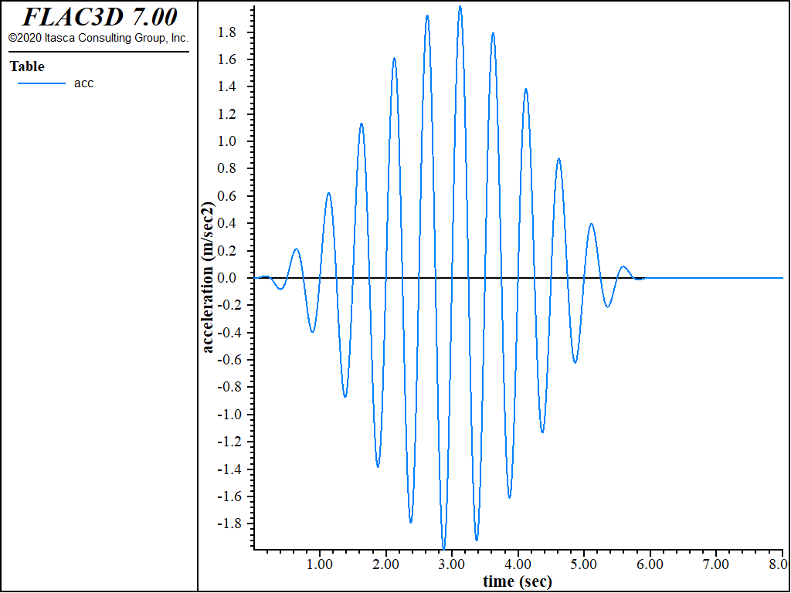
图 3：x 方向输入加速度（存于表 加速度（acc））。
根据该问题的弹性特性，较小的压缩波速和剪切波速出现在坝体中，分别为（由 P 波（P-Wave） 和 S 波（S-Wave））
\(C_p\) = 443 m/sec
\(C_s\) = 243 m/sec
该模型建立的最大网格单元尺寸 \(\Delta l\) 为 10 m。根据频率（frequency）和单元尺寸（element size），波在模型中传播时能够准确模拟的最高频率为
(2)\[f = {{C_s} \over {\lambda}} = {{C_s} \over {10\ \Delta l}} \approx\ {\hbox { 2.4 Hz}}\]因此，所选网格单元尺寸足够小，使 2 Hz 输入频率的波能够准确传播。
指定阻尼：Mohr-Coulomb 模型相关的塑性流动在高激励水平下耗散大量能量。因此，与全程采用弹性模型相比，附加阻尼及其参数的选择对分析结果的影响不那么关键。在施加任何阻尼之前，应在给定动力加载条件下检查假定弹性行为时模型中可能发展的最大剪应变，以评估是否需要附加阻尼。
如果使用 Rayleigh 阻尼，则必须指定一个能反映系统频率和输入波频率的中心频率，如Rayleigh 阻尼参数选取准则（Guidelines for Selecting Rayleigh Damping Parameters）一节所述。本示例中，输入波为单一频率 2 Hz，因此可将该值用作 Rayleigh 中心频率。另一种方法是，可用单个脉冲激励无阻尼系统；由此产生的自由振动可提供系统主要自振周期的估计。
可使用的另一种阻尼是“滞回”阻尼（如滞回阻尼（Hysteretic Damping）一节所述），它与频率无关。本示例假定坝体和地基材料表现为黏性土，其滞回行为由此处（here）所示的模量折减曲线描述。如果采用滞回阻尼公式（Hysteretic Damping Formulation）中所述的默认滞回阻尼函数，取 \(L_1\) = -3.156 和 \(L_2\) = 1.904，则滞回阻尼在约 0.1% 的剪应变范围内都能相当好地拟合模量折减曲线和阻尼比曲线，如与 SHAKE 的比较（Comparison to SHAKE）所示。
请注意，还可以在滞回阻尼中加入少量刚度比例 Rayleigh 阻尼（通常小于 0.2%），以消除模型结果中可能出现的高频噪声。（这由 图 7（Figure 7） 和 图 8（Figure 8） 的加速度时程图说明。）
施加动力荷载与边界条件：使用 施加网格单元面条件（
zone face apply） 命令并配合 table 乘数来指定动力输入。假定由 (2) 描述的加速度为河谷两侧可能发生的运动，因此无需对波进行反演。激励可按河谷两侧的刚性运动或柔性运动施加。本示例假定激励以沿两侧的刚性运动形式施加。或者可用“quiet”选项模拟柔性边界；使用 quiet 边界的简单示例见竖向杆中的剪切波传播（Shear Wave Propagation in a Vertical Bar）。河谷两侧沿 \(z\) 方向的运动被固定。这意味着河谷材料与河床地基材料之间为粗糙接触面。如果预计河谷材料与河床材料之间会发生差异运动，则应增加表示河谷材料的网格单元，并在两种材料之间设置接触面。
地基材料在 \(+x\) 和 \(-x\) 方向上均终止于距坝顶线 130 m 处。在这些端部规定 quiet 边界，以尽量减少次生波从坝体反射。请注意，无论采用哪种条件（刚性边界或 quiet 边界），都会对竖向传播的波产生非物理影响。（此处不能采用自由场边界，因为模型并非所有侧面都是竖直的。）任何人工边界都应设置在离关注对象足够远的位置，以尽量减小其干扰影响。应进行两次或更多次不同边界位置的模拟，以确定人工边界设置的最小距离，使其影响可以忽略。
一般来说，使用“动力输入”向导（可从 工具 菜单打开）对输入信号进行预处理（包括滤波和基线校正）更为容易。但在本示例中，这些步骤在 FISH 中完成。
在施加输入运动之前，应检查该运动的特性。本练习中的简单波具有一个主频：2 Hz。但一般来说，输入波包含一系列频率成分。对于含多个频率成分的波，可能需要滤除高频成分，因为高频成分会对波传播产生不利影响，如滤波（Filtering）一节所述。
此外，还应检查基线漂移（见 基线校正（Baseline Correction））。在本练习中，使用 FISH 内置函数 表格曲线积分（
table.integrate） 对加速度记录（存于表 1）进行两次积分。速度记录存于表 速度（vel），位移记录存于表 距离（dis）。所得位移记录显示残余漂移为 -0.00335 m。虽然这被认为不重要、可以忽略，但为演示该过程仍进行了基线漂移校正。基线校正通过向速度记录中加入一个低频正弦波（表 10）来实现；调整正弦波参数使最终位移为零。校正后的速度存于表 循环速度（cvel），校正后的位移存于表 循环位移（cdis）。校正程序列为“BASELINE.FIS”（见下文）。未校正和校正后的位移记录示于 图 4（Figure 4）。
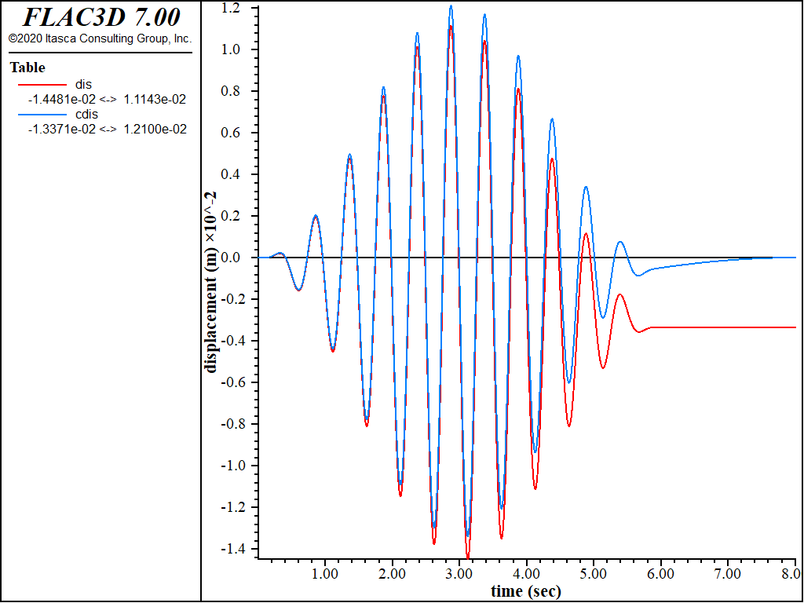
图 4：未校正（表 3）和校正后（表 6）的位移时程。
现在使用表 循环速度（cvel） 中经基线校正的速度记录施加输入运动。使用命令 单元面施加速度（
zone face apply velocity） (1,0.5,0) 表格插值取值（table） 循环速度（cvel） 施加 \(x\) 和 \(y\) 方向的速度，其范围对应于河谷左右两侧，如数据文件“DynamicExcitation.dat 数据文件（DynamicExcitation.dat）”所示。监测动力响应：本示例在坝顶以下四个深度处（包括底部（输入波））沿 \(x\) 方向监测速度和加速度。 位移和应力分量也可在任意位置监测。绘制循环剪应力与剪应变图，以评估最大应变水平以及材料中发生的滞回变形响应量。所有历史都应在动力模拟开始前请求。


动力模拟的数据文件为“DynamicExcitation.dat 数据文件（DynamicExcitation.dat）”。请注意，在模拟开始前求解模式由静力切换为动力（模型动力活动命令（model dynamic active） 关闭（off）），并执行大应变计算（设置大变形模式命令（model large-strain） 开启（on））。FISH 变量 freq、ampl 和 env _time 分别表示输入波的频率、波的最大幅值和包络的持续时间。
模型首先在假定无阻尼的条件下运行，以检查对动力荷载的弹性变形响应。 这有助于评估是否需要附加阻尼。 在模型的不同位置记录循环剪应力和剪应变历史。 本例中监测的是应力和应变的 \(xz\) 剪切分量。 图 5（Figure 5） 显示了坝体中心（0,0,15）处的剪应力与剪应变图，图 6（Figure 6） 显示了动力计算 10 秒后下游坡面附近 (-60,0,5) 处的同一图形。 发现整个模型中的峰值剪应变小于 0.1%。因此，取参数 \(L_1\) = -3.156 和 \(L_2\) = 1.904 的默认滞回阻尼被认为适合本示例的动力加载范围。
请注意，如 图 6（Figure 6） 所示，坡面附近的应力/应变图并不关于应力-应变原点对称。如使用滞回阻尼时的实际问题（Practical Issues When Using Hysteretic Damping）所述，这会导致使用滞回阻尼时剪应力与应变之间的不协调。为在施加动力荷载时从协调的应力-应变状态出发，更合适的做法是在滞回阻尼处于活动状态下初始化静力平衡状态。本示例中，我们判断剪应力与应变的不协调仅局限于坡面，且模型大部分区域的剪应力较低。因此，在模型达到静力平衡后才开启滞回阻尼。若要更彻底地分析，还应从一开始就开启滞回阻尼进行模拟，以评估原位剪应力的影响。

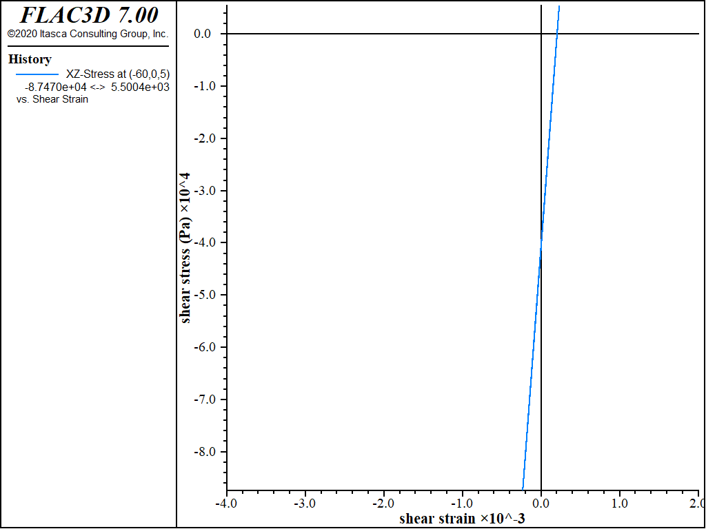
图 5：(0,0,15) 处的剪应力与剪应变关系——弹性材料，无阻尼。

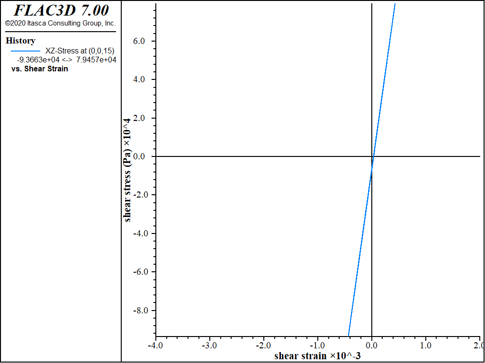
图 6：(-60,0,5) 处的剪应力与剪应变关系——弹性材料，无阻尼。
现在使用实际强度特性和默认滞回阻尼模型运行模型。图 7（Figure 7） 显示了 10 秒动力计算后模型底部和坝顶记录的加速度时程。图中比较了坝顶的 \(x\) 方向加速度响应（虚线）与模型底部的加速度（实线）。放大系数约为八；请注意，坝顶加速度在下游（负 \(x\)）方向更大。
图 7（Figure 7） 显示模拟时间接近结束时加速度中出现高频噪声。 加入少量刚度比例 Rayleigh 阻尼（2 Hz 时为 0.05%）后重新运行动力阶段以消除该噪声。（见 图 8（Figure 8）。） 该少量 Rayleigh 阻尼不影响模型中计算得到的变形。
振动过程中坝内发生大量塑性流动，导致不可恢复的位移。坝顶下游边缘的 \(x\) 和 \(z\) 方向位移时程示于 图 9（Figure 9）；每次 振荡循环都会使位移向下游和坝肩方向（由于激励未与河谷轴线对齐）增大。最终位移场的更全面视图以云图和矢量叠加在坝面上的形式示于 图 10（Figure 10）。观察到塌陷集中在下游侧坝顶附近。
坝体材料的滞回响应示于 图 11（Figure 11） 和 图 12（Figure 12）。该响应反映了塑性破坏和滞回阻尼共同耗散的能量。

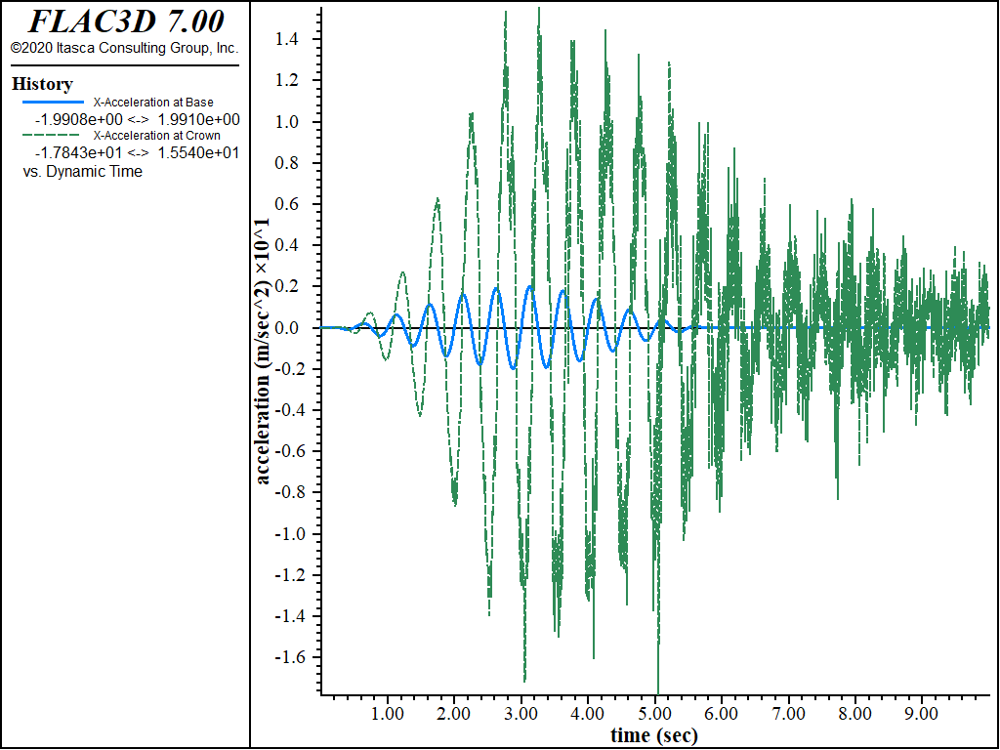
图 7：底部（蓝线）和坝顶（绿线）的加速度时程——仅含滞回阻尼

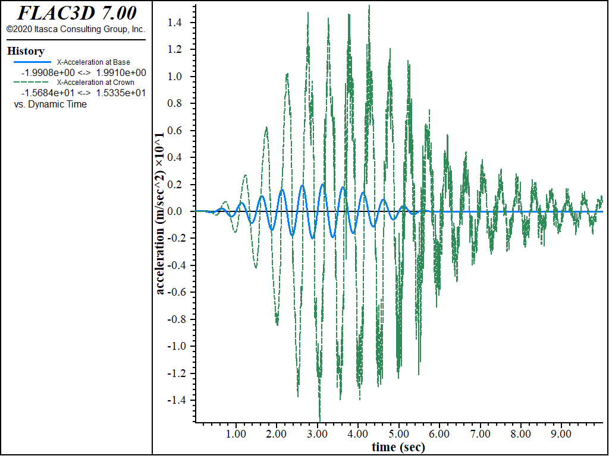
图 8：底部（蓝线）和坝顶（绿线）的加速度时程——含滞回阻尼和 0.05% 刚度 Rayleigh 阻尼。

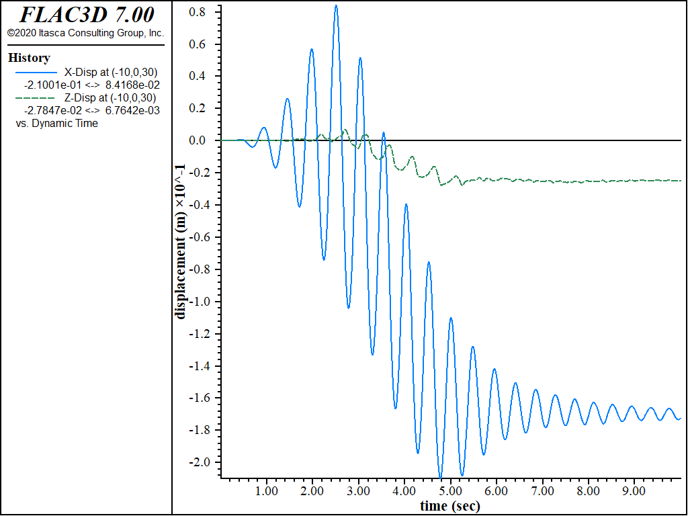
图 9：坝顶处的位移记录（x 和 z 方向）。

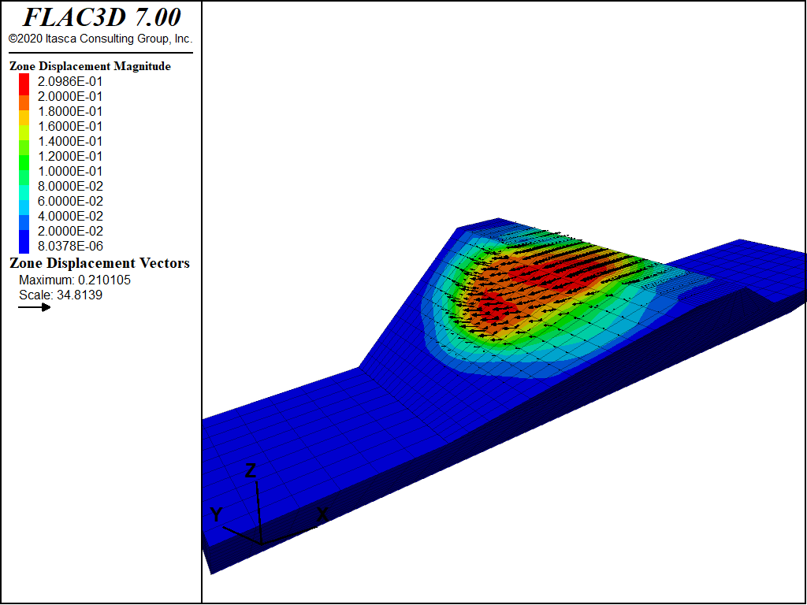
图 10：最终位移大小的云图和矢量。

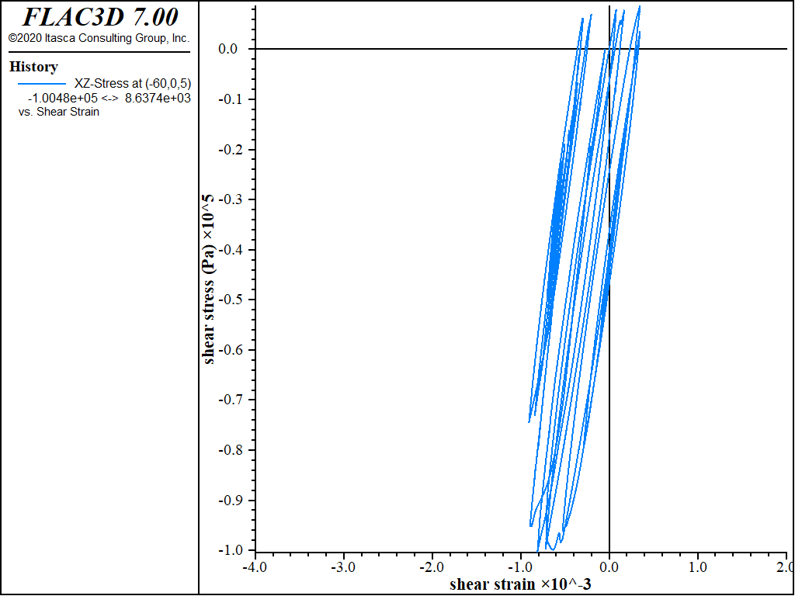
图 11：(0,0,15) 处的剪应力与剪应变关系——Mohr-Coulomb 材料，滞回阻尼。

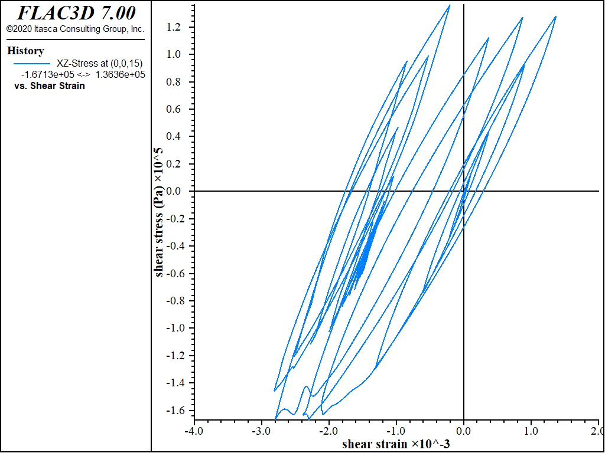
图 12：(-60,0,5) 处的剪应力与剪应变关系——Mohr-Coulomb 材料，滞回阻尼。
数据文件
生成坝基网格 - GenGrid.dat
;------------------------------------------------------------
; 坝体与地基
; 生成网格
;-------------------------------------------------------------------
model new
model large-strain off
model config dynamic
model dynamic active off
;--- 心墙 ---
; 由图形界面的构建块生成的几何体
program call 'Geometry' suppress
zone densify segments 1 2 1 range group 'dam'
; --- 将坝体连接到地基 ---
zone attach by-face
; 分配本构模型和属性
zone cmodel assign mohr-coulomb range group 'dam'
zone property shear 1e8 bulk 2e8 cohesion 1e10 tension 1e10 ...
density 1700 range group 'dam'
zone cmodel assign elastic range group 'foundation'
zone property shear 5e8 bulk 1e9 density 2100 range group 'foundation'
model save 'dam0'
施加边界条件和重力荷载 - GravLoad.dat
;------------------------------------------------------------
; 坝体与地基
; 施加重力荷载
;-------------------------------------------------------------------
model restore 'dam0'
; --- 为各边界分配组名
zone face skin break-angle 25
; --- 施加法向速度为零的边界条件
zone face apply velocity-normal 0.0 range group 'North' or 'South'
zone face apply velocity-normal 0.0 range group 'East' or 'West'
model gravity 10
model solve convergence 1
model save 'dam1'
设置实际强度特性并施加水荷载 - PropPlusWaterLoad.dat
;------------------------------------------------------------
; 坝体与地基
; 施加实际属性和水荷载
;-------------------------------------------------------------------
model restore 'dam1'
zone gridpoint initialize displacement (0,0,0)
zone face apply-remove
zone face apply velocity (0,0,0) ...
range group 'North' or 'South' or 'Bottom2' or 'East' or 'West'
zone face apply stress-normal -3e5 gradient (0,0,1e4) range group 'Top2'
zone initialize-stresses
zone property tension=4000 friction=40 cohesion=40000 range group 'dam'
model solve ratio-local 1e-4
model save 'dam2'
坝/河谷系统的动力激励 - DynamicExcitation.dat
;-------------------------------------------------------------------
; 坝体与地基
; 坝体/河谷体系的动力激励
;-------------------------------------------------------------------
model restore 'dam2'
model dynamic active=on
model large-strain on
; 计算施加波形并将其存储在表 'acc' 中的 FISH 函数
program call 'wave'
[table.as.list('vel') = table.integrate('acc')]
; 将加速度积分为速度
[table.as.list('dis') = table.integrate('vel')]
; 将加速度积分为速度
program call 'baseline' suppress
[baseline('vel',10,-0.00335,8,'cvel')] ; 对速度进行基线校正
[table.as.list('cdis') = table.integrate('cvel')]
; 施加静边界
zone face apply quiet range group 'East' or 'West'
; 向底部施加速度
zone face apply velocity (1,0.5,0) table 'cvel' ...
range group 'South' or 'Bottom2' or 'North'
; 重置速度和位移
zone gridpoint initialize velocity (0,0,0)
zone gridpoint initialize displacement (0,0,0)
; 历史
model history name='time' dynamic time-total
zone history name='xabase' acceleration-x position (0,0,-30)
zone history name='xacrest' acceleration-x position (0,0, 30)
zone history name='xdcrest' displacement-x position (-10,0,30)
zone history name='zdcrest' displacement-z position (-10,0,30)
zone history name='ssmid' strain-increment-xz position (0,0,15)
zone history name='sxzmid' stress-xz position (0,0,15)
zone history name='sstoe' strain-increment-xz position (-60,0,5)
zone history name='sxztoe' stress-xz position (-60,0,5)
; 指定滞回阻尼和瑞利阻尼
zone dynamic damping hysteretic default -3.156 1.904
zone dynamic damping rayleigh 0.0005 2.0 stiffness
; 求解至动力时间 10
model solve time-total 10
model save 'dam3'
BASELINE.FIS
;名称：baseline
;输入：itab_unc/int/102/未校正的速度表
;输入：itab_corr/int/120/低频正弦波校正
;输入：drift/float/0.3/记录终点的残余位移
;输入：ttime/float/40.0/记录总时长
;输入：itab_cvel/int/105/基线校正后的速度
;注意：使用低频正弦波进行基线校正
fish define baseline(itab_unc,itab_corr,drift,ttime,itab_cvel)
local npnts = table.size(itab_unc)
loop local ii (1,npnts)
local tt = float(ii-1) * ttime / float(npnts)
local vv = math.pi * tt / ttime
local cor_d = drift * math.pi / (2.0 * ttime)
table(itab_corr,tt) = -(cor_d*math.sin(vv))
table(itab_cvel,table.x(itab_unc,ii)) = table.y(itab_corr,ii) ...
+ table.y(itab_unc,ii)
endloop
end
⇐ Solving Dynamic Problems | Procedure for Dynamic Coupled Mechanical/Groundwater Simulations: Dam Foundation Wet ⇒
| 这些内容对您有帮助吗？… | FLAC3D © 2019, Itasca | 原文更新于 2020 年 10 月 8 日 |